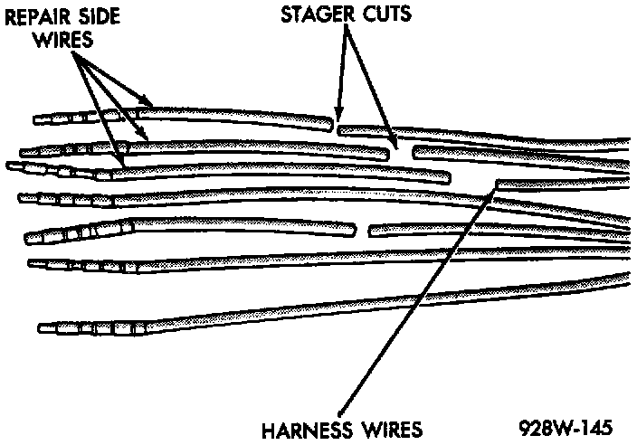
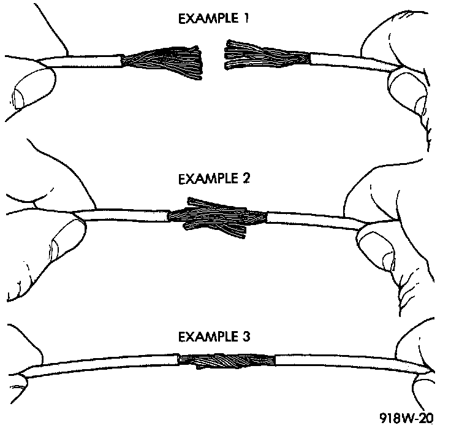

Connector and Terminal Replacement
1. Disconnect battery.2. Disconnect the connector (that is to be repaired) from its mating half/component.
3. Cut off the existing wire connector directly behind the insulator. Remove six inches of tape from the harness.
4. Stagger cut all wires on the harness side at 1/2 inch intervals.
5. Remove 1 inch of insulation from each wire on the harness side.
Stagger Cutting Wires (Typical):

6. Stagger cut the matching wires on the repair connector assembly in the opposite order as was done on the harness side of the repair. Allow extra length for soldered connections. Check that the overall length is the same as the original.
7. Remove 1 inch of insulation from each wire.
8. Place a piece of heat-shrink tubing over one side of the wire. Be sure the tubing will be long enough to cover and seal the entire repair area.
Wire Repair:

9. Spread the strands of the wire apart on each part of the exposed wires (Example 1).
10. Push the two ends of wire together until the strands of wire are close to the insulation (Example 2).
11. Twist the wires together (Example 3).
12. Solder the connection together using rosin core solder only. Do not use acid core solder.
13. Center the heat-shrink tubing over the joint and heat using a heat gun. Heat the joint until the tubing is tightly sealed and sealant comes out of both ends of the tubing.
14. Repeat steps 8 through 13 for each wire.
15. Re-tape the wire harness starting 1-1/2 inches behind the connector and 2 inches past the repair.
16. Re-connect the repaired connector.
17. Connect the battery and test all affected systems.